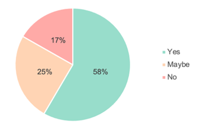
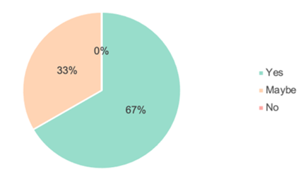
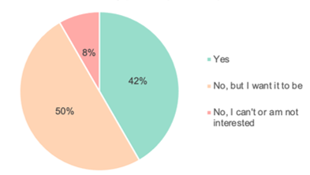
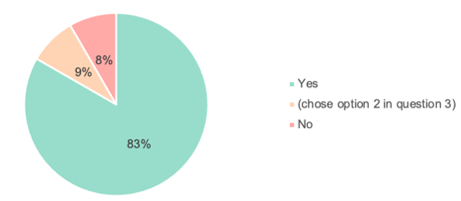
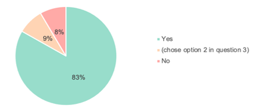
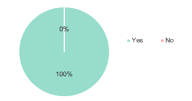

Surveys
To design an app that is well-suited to the needs of the elderly, we conducted a survey to know more
about the physical well-being of the elderly and how they manage in aspects such as medication and
exercise. People aged 50 and above were invited to respond to this survey.
From the results of our survey, we found that many respondents faced the issue of forgetting to
take their medication and would like to be reminded to do so.
-
Do you often forget to take your medication during the day?
 -
Are you comfortable with being reminded to take your medication (harmoniously)?
 -
Is exercising part of your daily routine?
 -
Do you have trouble finding appropriate exercises for your age group and physical ability?
 -
Do you want to keep track of your exercises (i.e. recording heartbeat, calories, tracking movement, etc.)?
 -
Do you want your caretaker to receive information about your medication and exercise routine so they can interfere if situation arises?

Furthermore, many respondents tell us that they are interested in exercising but have trouble finding suitable exercises for their age group and physical abilities.
Many respondents would also like to track their progress and physical well-being.
Current market
Since similar apps can already be found in the current market, we have done some research to identify their strengths and weaknesses, to design an app that incorporates some of these strengths, while improving the weaknesses, and to better cater to the elderly users.
| Name of App | Description | Strengths | Weaknesses |
|---|---|---|---|
| Medisafe | Using this app, you can set reminders for each of your medications. It can also alert you of upcoming refills and doctor’s appointments. You can also keep a log of each of your medications and share it with your physician. | Notifications are very helpful for tracking medication intake Easy communication with the doctor by showing them their prescription using the app |
Users are facing technical issues of reminders not being on time |
| Pillboxie | This app lets you visually manage your medications and schedule reminders. You can customize your medications with tons of combinations of med types and colors. You can also see a list of what medications are due today and check them off as you go. | Snooze feature is helpful for when you do not have the medication with you at the moment Reminders are helpful Customization using colors |
Cannot set reminders for any time other than on the hour. Cannot enter any information other than medication names. It would be helpful to be able to input other pertinent pieces of information such as dosage. |
| Might Health | This app provides a library of workouts that are easy on the joints, from knee strengthening to chair yoga. | Provides exercises that are easy on the joints, which are more suited for the elderly Targeted at people above 50 years old |
Does not have a medication reminder feature Does not provide safety tips |
| Flip50 | This app makes it easy for anyone aged 50+ to stay motivated to exercise, eat well, and take time to shake off stress. | Provides exercise suited for the elderly Targeted at people above 50 |
Does not have a medication reminder feature Does not provide safety tips |